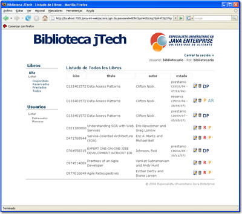
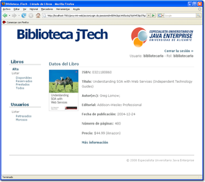

El especialista se impartirá desde el 25 de septiembre de 2009 hasta el 28 de mayo de 2010, los viernes de 16:00 a 21:00 horas y los sábados de 9:00 a 14:00 horas. Puedes consultar el calendario detallado (enlace a Google Calendar, se abre en otra página).
La metodología de aprendizaje de un curso de estas características debe ser fundamentalmente práctica. Está basada en la realización individual de ejercicios prácticos guiados, ejercicios de ampliación y prácticas de integración, así como en el desarrollo de un proyecto completo utilizando metodologías ágiles y herramientas avanzadas de desarrollo de software (la mayoría de ellas open source).
Aparte de las clases presenciales, utilizaremos dos plataformas web para dar soporte a otro tipo de interacciones docentes (foros, entregas y correcciones de ejercicios, repositorio de material docente, etc.). Estas plataformas son Moodle para la interacción docente y Apache Forrest (usado por los profesores) para procesar el material docente y generar distintos tipos de formato (html y pdf) a partir de XML.
En cuanto al desarrollo de las clases, durante el curso utilizamos cuatro tipos de sesiones docentes: sesiones teórico-prácticas, sesiones de integración, sesiones de proyectos y charlas. En las sesiones de integración y en las de proyectos se construirá una aplicación real y operativa: un sistema para la gestión de una biblioteca de un centro educativo.
Proyecto de Aplicación Java Enterprise
A lo largo del curso se integran las tecnologías aprendidas en un completo proyecto Java EE. Este proyecto consistirá en una aplicación Web con la que se gestionarán las distintas operaciones de una biblioteca de un centro educativo (préstamo de libros, listados, gestión de usuarios, etc.). En la aplicación se gestionarán distintos perfiles (como administrador, bibliotecario, profesor o alumno) y se proporcionarán distintas operaciones a cada uno de ellos.


La aplicación se desarrollará siguiendo los estándares de una aplicación profesional, aunque su funcionalidad estará lógicamente limitada por el número de horas disponibles. El resultado final de este proyecto será una aplicación modelo, fácilmente modificable y ampliable, que incluye todas las tecnologías vistas en el curso. En el proyecto de aplicación también se introducirán metodologías, tecnologías y herramientas nuevas orientadas al desarrollo de aplicaciones (refactorización, pruebas de funcionalidad, pruebas de rendimiento).
La realización del proyecto se llevará a cabo al finalizar cada uno de los módulos y estará en todo momento guiada por los profesores responsables del módulo. La guía de desarrollo del proyecto contiene más de 180 páginas en las que se incluyen abundantes ejemplos de código y explicaciones paso a paso de los aspectos más complicados.
Metodología de las sesiones docentes
Como hemos comentado, utilizamos cuatro tipos de sesiones docentes. En el calendario se encuentran detalladas todas las sesiones, especificando horas y contenidos. Durante el desarrollo del curso se intercalarán estos tipos de sesiones. Por ejemplo, muchos sábados comenzarán con una charla que será seguida de una sesión de integración del módulo que se esté impartiendo.
Sesiones Teórico-Prácticas
Se trata de sesiones de 2,5 horas de duración. En una primera parte se presentan los conceptos o tecnologías a estudiar y en la segunda se realizan ejercicios prácticos guiados y de ampliación sobre el tema presentado. Se realizan de forma individual. El objetivo de estas sesiones es conocer y aplicar las nuevas tecnologías presentadas.
Sesiones de integración
Las sesiones de integración tienen 2,5 horas presenciales y se realizan al finalizar un módulo. En estas sesiones se aplican las tecnologías aprendidas en el módulo al proyecto de aplicación. Se realizan de forma individual. El objetivo de estas sesiones es reforzar los aspectos más importantes de las tecnologías estudiadas, utilizándolos en una aplicación real.
Sesiones de proyecto
Sesiones de 7,5 horas presenciales en las que se refactoriza el proyecto desarrollado en las sesiones de integración, incluyendo nuevos patrones y tecnologías. Estas sesiones servirán también como ejemplos de desarrollo de software utilizando metodologías ágiles. Realizamos dos sesiones de proyecto, una a mitad de curso, dedicada a refactorizar la parte web de la aplicación y otra al final del curso, para refactorizar la parte enterprise.
Charlas
sesiones de 2,5 horas de duración en las que se presentan aspectos relacionados con metodologías y diseño de aplicaciones. La aplicación práctica de estos conceptos se lleva a cabo en los dos proyectos que se realizan en el curso, en las sesiones de integración y, en general, en gran parte de los ejemplos y ejercicios planteados en todos los módulos.